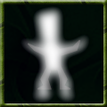

|
 |
Noncorporeal Monsters with the noncorporeal ability can make their bodies transparent and ethereal. While noncorporeal, they can pass through walls and float into areas not accesible by walking. Command: fade This ability is based on:
Non-corporeal may only be purchased by members of the undead caste.
To use your ability to pass through walls between rooms type the command fade <direction>, where <direction> is one of the cardinal directions (north, west, etc.). |
Corpse Feast | Noncorporeal | Drain Life | Raise